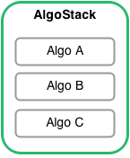

One of the core building blocks of bt is the Algo and the closely related AlgoStack.
An Algo is essentially a function that returns True or False. It takes a single argument that is the Strategy being tested. An Algo should ideally only serve one specific purpose. This purpose can control execution flow, it can control security selection, security allocation, etc. For example, you can have an Algo that checks if the month has changed (such as bt.algos.RunMonthly). If it has, this Algo return True, if not, False.
An AlgoStack is a class that groups together many Algos and runs them one after another as long as each Algo returns True. As soon as an Algo returns False, the AlgoStack stops its execution and returns False (an AlgoStack is an Algo after all). This allows us to combine different Algos together and control the flow of execution with the Algo return value. Many AlgoStacks can they themselves be included into another AlgoStack should the need arise.
By breaking down strategy logic into these small blocks of code, we achieve testability and reusability - two appealing features when working on software development.
In order to pass data between different Algos, the Strategy has two properties: temp and perm. They are both dictionaries and are used for storing data generated by Algos. Temporary data is refreshed on each data change whereas permanent data is not altered.
Algos usually set and/or require values in the temp or perm objects. For example, the bt.algos.WeighEqually Algo sets the ‘weights’ key in temp, and it requires the ‘selected’ key in temp.
For example, let’s take a simple select -> weight -> allocate logic chain. We would break this strategy up into 3 Algos:
In this case, the selection Algo could set the ‘selected’ key in the strategy’s temp dict, and the weighting Algo could read those values and in turn set the ‘weights’ key in the temp dict. The allocation Algo would then read the ‘weights’ and act accordingly.
Note
To preserve maximal flexibility, there are currently no checks to make sure the AlgoStack is valid. Therefore, it is up to the user and creator of Algos to make sure the requirements and side effects are well documented and properly used (by the way, this may not be a great way to go about this problem. If you have a better idea, please let me know!).
Developpers should add a section in the docstring that outlines the “sets” and the “requires”. See the doctrings of bt.algos.WeighEqually for an example.
In most cases, Algos must preserve some kind of state. In this case, it is easier to implement them as classes and define the __call__ method, like below:
class MyAlgo(bt.Algo):
def __init__(self, arg1, arg2):
self.arg1 = arg1
self.arg2 = arg2
def __call__(self, target):
# my logic goes here
# accessing/storing variables through target.temp['key']
# remember to return a bool - True in most cases
return True
However, for Algos that do not need to preserve any state, you may simply implement them as a basic function that takes one argument - the Strategy:
def MyAlgo2(target):
# all the logic
return True